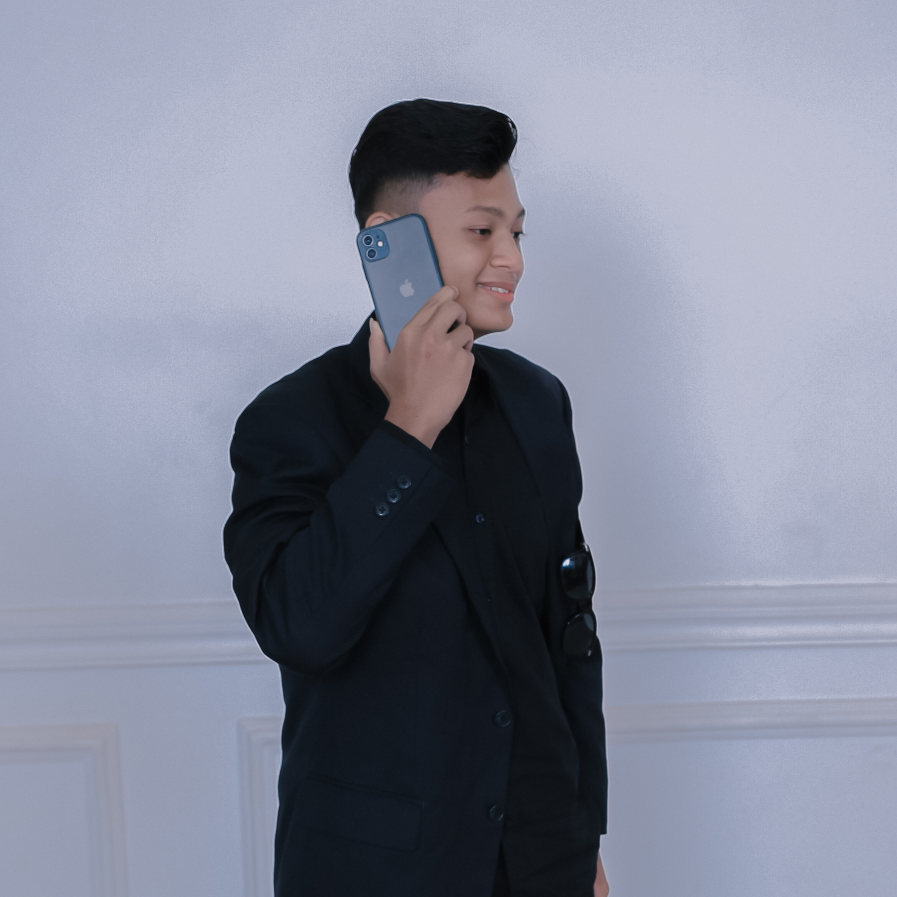

Personal Website • Creative • Professional
Ardians Production berdiri karena visi misi yang selaras dengan kebutuhan masyarakat. Website ini berisi informasi dan layanan yang di sediakan. Berfokus pada Pelayanan, profesionalitas, serta Kreatifitas yang modern dan relevan.
Produksi dan pengembangan film pendek dengan pendekatan sinematik, emosional, dan terkonsep.
Layanan videografi untuk promosi, wedding, yearbook, dan dokumentasi dengan hasil visual profesional dan terkonsep.
Layanan tour leader dengan komunikasi yang baik, ramah, dan mengutamakan kenyamanan serta pelayanan peserta.
Penyedia layanan bus pariwisata yang nyaman, aman, dan terpercaya untuk berbagai kebutuhan perjalanan.
Penulisan script film pendek dengan struktur kuat, karakter hidup, dan konflik yang terarah.
Pendampingan awal konsultasi hukum dan penghubung ke pengacara profesional sesuai kebutuhan kasus.
Email: wildanardians580@gmail.com
Instagram: @wildan_ardnsyh